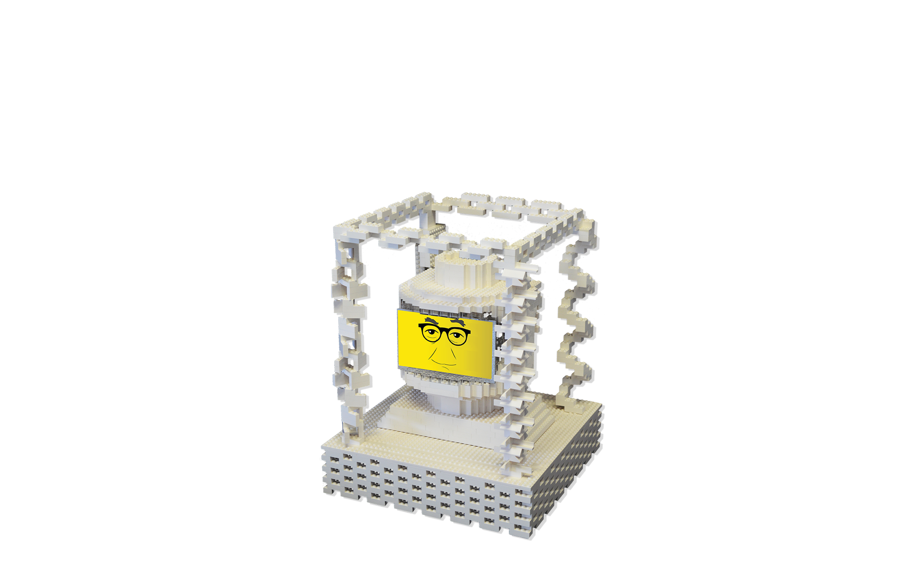

Interactive Installation with Lego
Project Type: Interactive installation
Roles: Designer & maker & coder
Team: Joel Putnum, Marya Kanakis, David Walczyk
Timeline: Spring 2016
Starchitect is a interactive installation including a lego robot and VR frame. The project aim to help young kids recognize the most famous architects around the world and inspire them to imaging their dreamlike architecture through a unique VR exploration.
For architects, we are testing innovative way of architecture presentation. For children, we are testing a more interactive methods to enable them learning the fundamental knowledge of architecture.
Using CAD drafting tool to sketch the famous architect face out.
After manifested identify the most distinctive features of his face with the most simple lines。
Every architect we look for has its own distinctive characteristics and represents its own architectural genre.
The final product being divided into two parts. Interactive lego head and a VR headset. Both parts has been installed and exhibited in science technology museum at Chicago. In the VR headset, 10 different architecture scenes has been pre-modeled and installed by our team members.

Eye on the architect's face will look at different direction when the kids move either left of right hand.
Image on the left shows how the users will access to the installation. The other diagram shows all the electronic devices I have been used in the head part.
An VR lego frame with 10 different architect's masterpiece has also been prepared for this project. Through combination of Unity3D and lego bricks, our lego VR frame can bring kids to another level of understanding about living space.